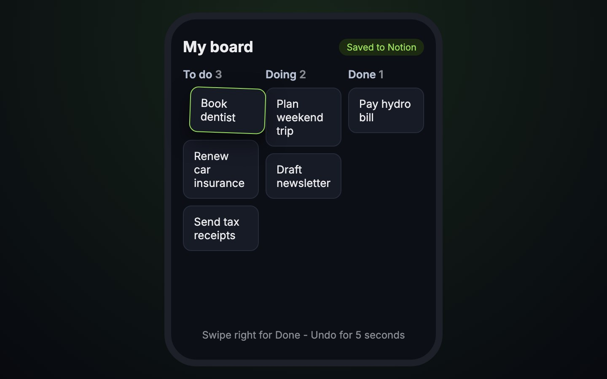

Pocketboard
PrivateRun a Notion task board with thumb swipes on a phone, with every change saved straight to Notion.

266real tasks handled in a live test
5 sto undo a swipe
180 dayssigned in per device
What it does
Built for thumbs
- One column at a time, with tabs at the bottom.
- Swipe right to mark a task done, with a quick undo.
- Swipe left or tap a card to edit or move it.
- Add, search and filter tasks across every column.
Notion stays the truth
- Every add, edit and move is saved straight to Notion.
- Nothing else is stored, so the board never drifts out of date.
- Deleted tasks go to Notion's trash, so they can be restored.
Works everywhere
- On a wide screen, all columns sit side by side with drag and drop.
- Installs to the home screen like an app on phone, Mac or Windows.
- The last view loads instantly, then refreshes.
- A password once per device keeps the board private.